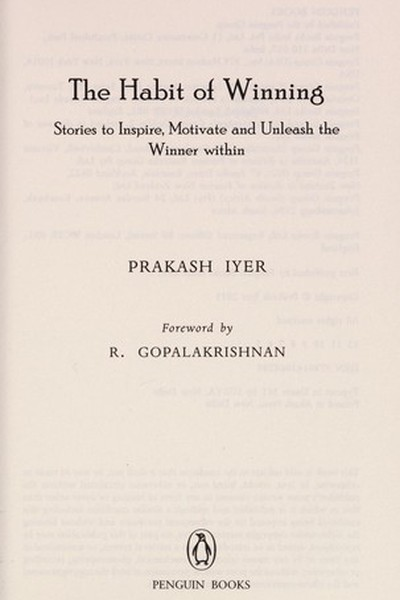

Library › Self-Improvement
The Habit of Winning — Summary & Key Lessons

True stories of Indian winners — success is a habit, not a birthright.
📖 OPEN THE FULL INTERACTIVE BREAKDOWN →🌐 Read it in Hindi, Hinglish, Gujarati, Tamil & 22 more languages — free, with audio.
💡 The Big Idea
Prakash Iyer — a former Xerox and Pepsi executive, and captain of the India hockey team as a boy — distills winning into something ordinary: habits, not magic. The book is a collection of true stories — from cricketers to corporate leaders to everyday Indians — each illustrating one small principle. His core message: winning is not a rare talent that some are born with; it is a set of repeatable habits — showing up early, doing the extra rep, choosing attitude over circumstance, finishing what you start. Anyone can build the habit of winning by stacking small daily wins until they compound into an unshakeable identity.
🧠 The 6 Key Lessons
Lesson 1: Winners Are Made in Practice, Not Matches
Part 1: The Winning Mindset
Iyer's most repeated idea: the habits you build in practice are the ones that show up in the match. He points to Sachin Tendulkar's relentless net sessions and the countless unseen hours behind every 'overnight success'. If you want to perform when it matters, do the unglamorous work when no one is watching. The match is just a test of what practice has already decided. Winners don't magically rise to the occasion — they rise to the level of their preparation, and the 'occasion' simply reveals it.
📖 Example: Iyer tells the story of Rahul Dravid arriving at practice before everyone and leaving after everyone — earning the nickname 'The Wall' not from talent, but from the habit of showing up when no one else would. The Wall was built brick by brick in empty… Read the full example →
⚡ Do this: Pick one skill that matters to your goal and schedule 30 minutes of deliberate practice today — before the 'match' demands it.
Lesson 2: Attitude Is a Choice You Make Every Morning
Part 1: Attitude
Iyer argues that while you cannot control events, you fully control your response — and that response, repeated daily, is what separates winners. He shares stories of people who turned setbacks into fuel: the athlete who lost but improved, the salesperson who treated rejection as data. Attitude is not a personality trait you are born with; it is a decision you take each morning and defend through the day. Small shifts in language — from 'I have to' to 'I choose to' — rewire how your brain experiences the same task. Winners talk to themselves differently, and that inner conversation becomes outer reality.
📖 Example: He describes a hotel bellboy who, when asked how he was, replied 'I am great — and this is going to be the best day of my life!' The bellboy later became a successful manager. The difference was not circumstance — it was the daily chosen narrative. Read the full example →
⚡ Do this: Tomorrow morning, say out loud one sentence of positive self-talk before checking your phone. Repeat for 7 days.
Lesson 3: The Extra Mile Has No Traffic
Part 2: Effort
The habit of doing a little more than required is the cheapest competitive advantage in the world, because almost no one does it. Iyer collects examples: the employee who answers emails at 7am, the shopkeeper who remembers your name, the athlete who stays back for 50 extra balls. Excellence is not a big leap — it is a thousand small 'extras' that competitors dismiss as unnecessary. The extra mile is rarely crowded precisely because it looks optional. Winners treat it as non-negotiable.
📖 Example: He cites how top professionals in every field share one trait: they do what they are not paid to do. The junior who prepares the client's presentation 'just in case' becomes the manager clients demand — the extra effort compounds into visibility and trust. Read the full example →
⚡ Do this: Today, do one task beyond your job description or expectation — without telling anyone. Let the work speak.
Lesson 4: Finish What You Start — The Discipline of Closure
Part 2: Perseverance
Most people are great starters and poor finishers. Iyer emphasizes that winning belongs to finishers: the ones who complete the report, close the deal, submit the project, finish the race. He shares stories of Indian entrepreneurs and sportspeople who failed multiple times but refused to abandon the last 10% — where most people quit. Momentum is built in finishes: every completed task deposits confidence, every abandoned one withdraws it. The habit of closure — small and large — is the foundation of self-belief. You don't need more motivation; you need more endings.
📖 Example: He tells of a marathon runner who, despite being far behind, refused to stop and finished the race to a standing ovation. The crowd cheered not the winner but the finisher — because everyone knows how rare finishing is. Read the full example →
⚡ Do this: Make a list of 3 unfinished tasks. Finish the smallest one today, completely — no touch-ups tomorrow.
Lesson 5: Team Wins Come From Making Others Win
Part 3: Leadership
Drawing from his Pepsi and Xerox years, Iyer argues that individual winners create their own success, but sustained winning requires making others successful too. A leader's real job is to multiply — to give credit, build confidence, and remove obstacles for the team. He shares how great captains and managers celebrate others' wins loudly and absorb losses quietly. The habit of winning is contagious when it is shared: teams that feel trusted outperform teams that feel used. Your success is ultimately the sum of the people you have helped win.
📖 Example: He recounts a manager who publicly credited his junior for an idea the manager had actually shaped — the junior's confidence soared, and the team's output doubled within months. Generous credit became a performance engine. Read the full example →
⚡ Do this: This week, publicly praise one teammate or family member for something specific — no 'but' attached.
Lesson 6: Dream Big, But Walk Small Steps
Part 4: Making It Happen
The final habit ties the book together: big dreams need small, daily, boring steps. Iyer warns against waiting for the 'big break' and instead advocates building a staircase of mini-goals. Each small win — a call made, a page written, a kilometre run — feeds the next. This is how ordinary people achieve extraordinary outcomes: not through one heroic moment, but through hundreds of unheroic ones done consistently. The habit of winning is simply the habit of moving, every single day, in the direction of your dream — and refusing to confuse motion with noise.
📖 Example: He shares the story of an ordinary clerk who wrote one page of a book every night for a year — and ended with a published manuscript. Not a genius, not a shortcut — just 365 small steps that most people couldn't be bothered to take. Read the full example →
⚡ Do this: Break your biggest goal into today's one small step. Do it. Tomorrow, do the next. Build the chain.
✅ 5-Step Action Plan
- Schedule 30 minutes of deliberate practice daily — before the match, not during it.
- Start each morning with one sentence of positive self-talk before your phone.
- Do one unpaid 'extra mile' task every day for a week.
- Finish one small task completely every day — build the closure habit.
- Give one specific, public, no-strings praise this week.
💬 Best Quotes from The Habit of Winning
- “Winners are not born. They are made — one habit at a time.”
- “The extra mile has no traffic jams.”
- “It's not about having time; it's about making time.”
Interactive version: mark lessons as read, listen in your language, share quote cards.